COORDINATE SYSTEM
x,y coordinates are used to denote the position of the sprite.
- Move Left and Right: If you want the sprite to move left/right change x.
- Move Up and Down: If you want the sprite to move up/down, change y.
CHANGING THE SIZE OF SPRITES
You can change the size of the sprite by changing the number here:
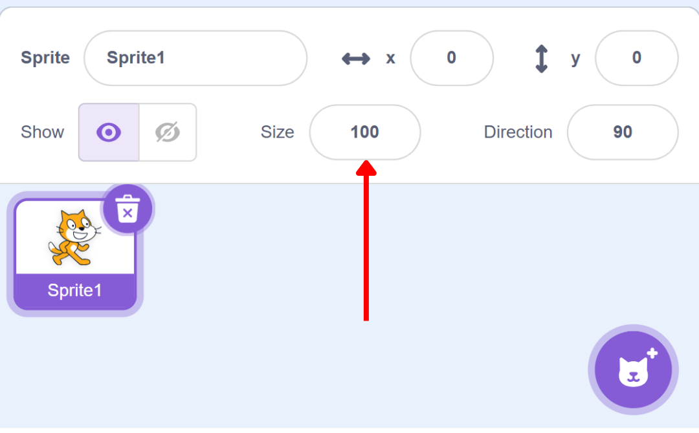
MOVING SPRITES
Motion blocks allow us to move sprites in different directions (up, down, left, right) or make them perform actions like turning or gliding.
Demonstration of Simple Motion
I am going to make the sprite move around the screen using simple commands. Watch how we can control the sprite’s movement with just a few blocks!
Let’s begin with the move block.
The move block helps the sprite move some steps in the current direction.
Let’s try to move the sprite when you click on it.
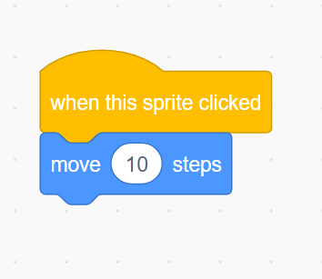Now, let’s take control of the sprite’s position in a more specific way using change x by and change y by blocks. These blocks allow you to move the sprite horizontally or vertically.
| 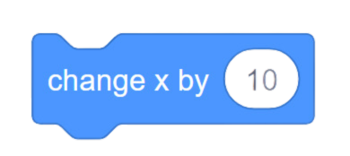 | It changes the sprite’s x position by a certain amount. |
| It changes the sprite’s y position by a certain amount. |
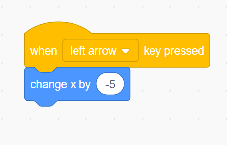
If you want the sprite to go left you need to reduce the x coordinate hence the minus sign.
Now, let’s try to move it toward the right.
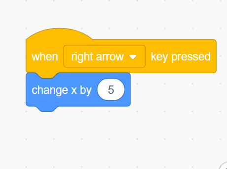
Now let’s move it up and down.
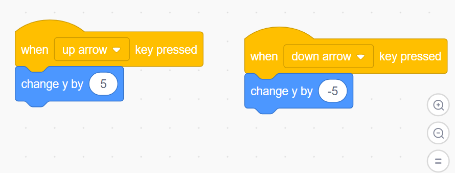
If you want the sprite to move at a specific position use go to command. Let’s say when you press space key, you want the sprite to move at a center.
| 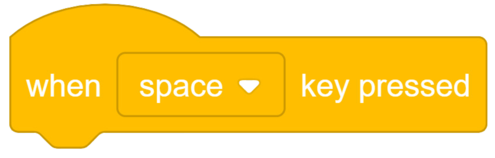 | When the specified key is pressed, it runs the commands attached to it. You can pick the key by clicking from the drop-down menu. |
| 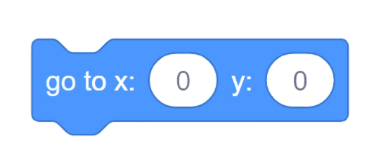 | Moves the sprite to specified x,y position. |
For the center, the coordinates will be 0,0
Moves the sprite to a random position.
Let’s move the sprite to a random position when you click on the green flag.
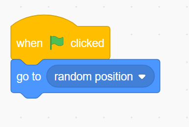
If you wish to see the x-y positions you can select these in the motion section:
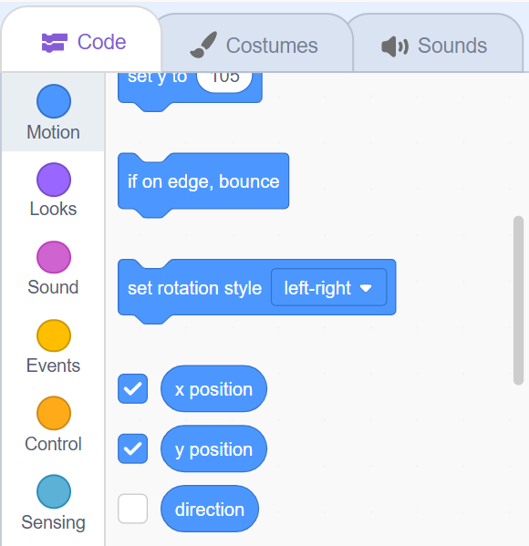
You will see something like this:
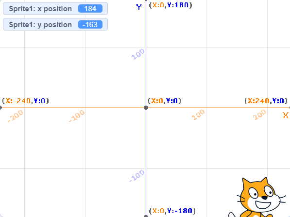